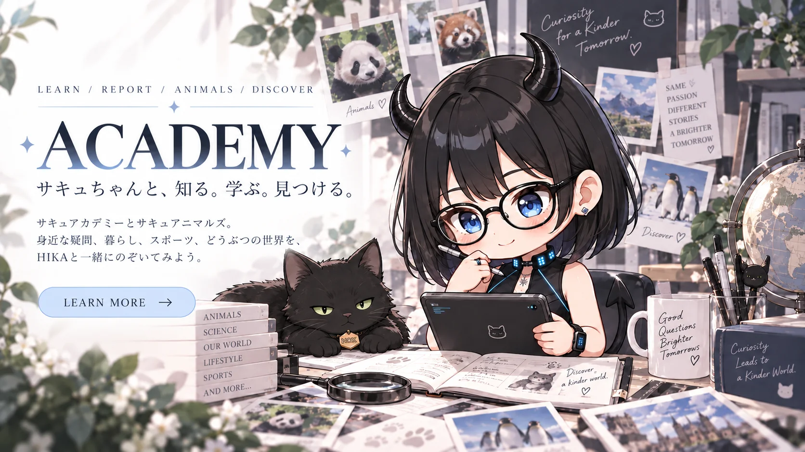

ACADEMY — サキュちゃんと、知る。学ぶ。見つける。

Academy
気になったことを、いっしょに見つめる。
当たり前に見えることにも、立ち止まってみると「なんで？」が隠れています。
身近な疑問を調べたり、動物や動物園を観察したり。
HIKAと一緒に、知ることの面白さを広げていく場所です。
Series 01
SUCCU ACADEMYサキュアカデミー
「これって、なんで？」
そんな小さな疑問から始まるサキュアカデミー。SuccuChanのみんなも、人間界についてまだ勉強中。一緒に調べたり、ときには皆さんに教えてもらったりしながら、身近な世界をもう一度見つめていきます。
- 疑問を持つこと
- 調べてみること
- 知ると世界が少し面白く見えること
Series 02
SUCCU ANIMALSサキュアニマル
HIKAが実際に動物園へ足を運び、自分のカメラで撮影した写真とともに記録する観察シリーズ。動物の魅力だけでなく、動物園という場所や、そこで守られている命にも目を向けていきます。
Photo掲載している動物写真は、HIKAが実際に訪れて撮影した実物の写真です。（AIで生成・加工した動物写真は使用していません）
気になった動物や個体を追いかけたり、成長や変化を見守ったり。動物園の役割や、保全・研究にも少しずつ目を向けていきます。SNSには、特定の動物を長く追い続け、すてきな記録を残している方々もたくさんいます。気になったら、いろんな人の記録ものぞいてみてください。
Xで #サキュアニマル を見る →Latest
ARCHIVE記録いちらん
HIKA's perspective
HIKA'S PERSPECTIVE
HIKAは、答えを全部知っている先生ではありません。
気になったことをそのままにせず、自分で見て、調べて、考えてみる。
もし皆さんが知っていることがあれば、人間界のガイドとして教えてください。
疑問を持つことから、新しい世界が始まるかもしれません。